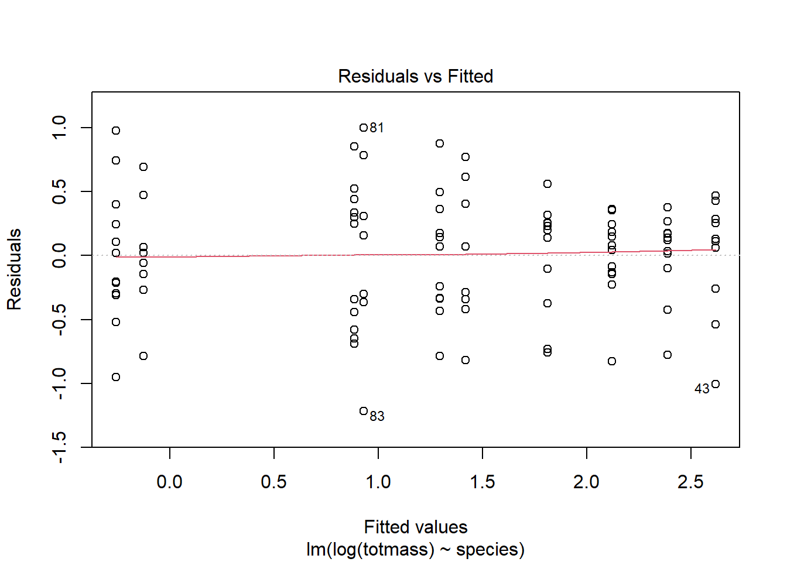
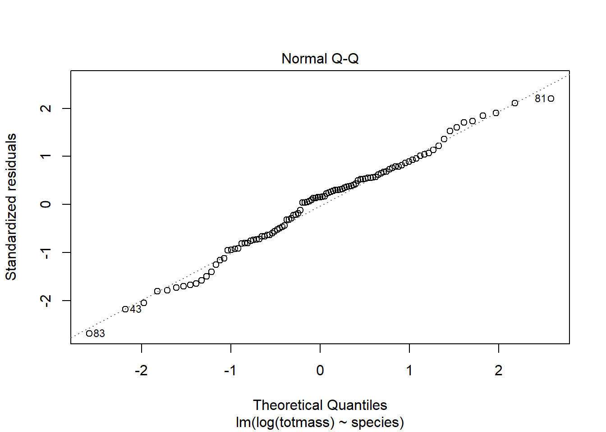
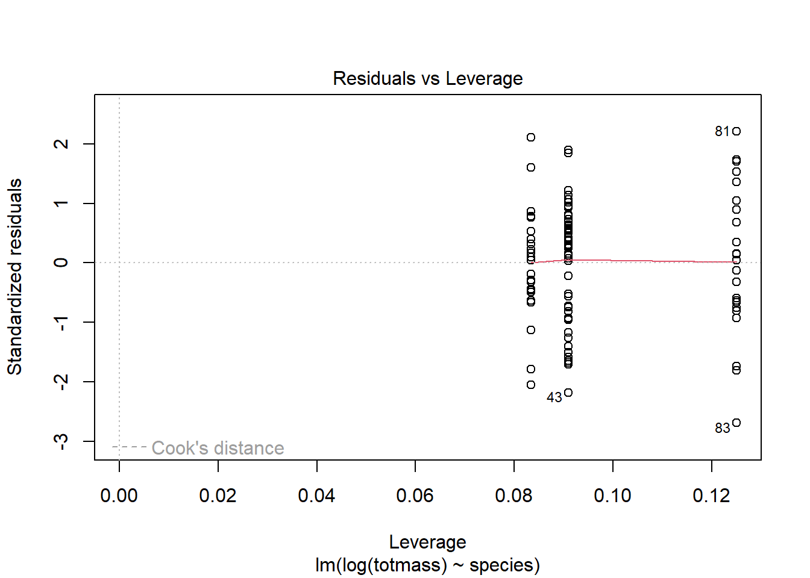

Code
#install.packages("car")Nick Momaney
6/6/2023
Github repository: here
Sarracenia are a family of pitcher plants whose leaves serve as traps that capture and digest small prey and insects (Freedman et al 2021). These plants are fascinating because carnivorous plants are very rare and unique. These plants are also important to ecosystems for their nutrient cycling and pest control. Understanding their biomass and the characteristics that affect it allows researchers to “create a framework for understanding physiological and evolutionary constraints in other highly specialized plant species” (Farnsworth and Ellison 2008). The Sarracenia purpurea have also been found to create an anti-herpes virus, which can be a non-pharmaceutical treatment for a disease that affects over 60% of the population (Kannan et al. 2020). The statistical analysis performed below addresses the question of what characteristics affect biomass. The hypothesis being tested is that the morphological, physiological, and taxonomic characteristics affect the biomass of the species. Specifically, this study is addressing a subset of the characteristics from the data collected by the researchers: subspecies, amount of food, specific leaf area, chlorophyll content of youngest leaf, mass-based light-saturated photosynthetic rate of youngest leaf, number of leaves and phyllodes, and the number of phyllodes.
#install.packages("car")library(tidyverse)
library(here)
library(janitor)
library(ggeffects)
library(performance)
library(naniar) # or equivalent
library(flextable) # or equivalent
library(car)
library(broom)#install.packages("corrplot")
#install.packages("AICcmodavg")
#install.packages("GGally")library(corrplot)
library(AICcmodavg)
library(GGally)#reading in data table
plant<- read_csv(here("data", "knb-lter-hfr.109.18", "hf109-01-sarracenia.csv")) %>%
#making the column names cleaner
clean_names() %>%
select(totmass, species, feedlevel, sla, chlorophyll, amass, num_lvs, num_phylls)
head(plant)# A tibble: 6 × 8
totmass species feedlevel sla chlorophyll amass num_lvs num_phylls
<dbl> <chr> <dbl> <dbl> <dbl> <dbl> <dbl> <dbl>
1 3.10 alabamensis 0.125 113. 437. 21.1 5 0
2 3.77 alabamensis 0.0156 141. 429. 8.62 10 0
3 1.56 alabamensis 0.0625 138. 437. 23.1 7 0
4 1.26 alabamensis 0.0625 189. 440. 45.0 5 0
5 1.35 alabamensis 0.0312 104. 445. 25.0 9 1
6 4.08 alabamensis 0.25 119. 434. 19.4 14 0#missing data visualization
gg_miss_var(plant)
plant_subset<- plant %>%
drop_na(sla, chlorophyll, amass, num_lvs, num_phylls)
view(plant_subset)#correlation plot
#To determine the relationships between numerical variables in our dataset, we calculated Pearsons r and visually represented correlation using a correlation plot.
# calculate Pearson's r for numerical values only
library(car)
plant_cor<-plant_subset %>%
select(feedlevel:num_phylls) %>%
cor(method="pearson")# creating a correlation plot
corrplot(plant_cor,
# change the shape of what's in the cells
method = "ellipse",
addCoef.col = "black"
)
#creating a plot of each variable compared against the others
plot <- plant_subset %>%
select(species:num_phylls) %>%
ggpairs()
# Customize the appearance of the plot
plot + theme_bw() + theme(text = element_text(size = 6))#starting regression here
#To determine how species and physiological characteristics predict biomass, we fit multiple linear models.
null<- lm(totmass~1, data= plant_subset)
full <- lm(totmass ~ species + feedlevel + sla + chlorophyll + amass + num_lvs + num_phylls, data = plant_subset)# Diagnostics
#We visually assess normality and homoskedasticity of residuals using diagnostic plots for the full model
par(mfrow= c(2,2))
plot(full)
#testing normality
check_normality(full)Warning: Non-normality of residuals detected (p < .001).check_heteroscedasticity(full)Warning: Heteroscedasticity (non-constant error variance) detected (p < .001).null_log <- lm(log(totmass) ~ 1, data = plant_subset)
full_log <- lm(log(totmass) ~ species + feedlevel + sla + chlorophyll + amass + num_lvs + num_phylls, data = plant_subset)
plot(full_log)


check_normality(full_log)OK: residuals appear as normally distributed (p = 0.107).check_heteroscedasticity(full_log)OK: Error variance appears to be homoscedastic (p = 0.071).#evaluate multicollinearity
car:: vif(full_log) GVIF Df GVIF^(1/(2*Df))
species 42.351675 9 1.231351
feedlevel 1.621993 1 1.273575
sla 1.999989 1 1.414210
chlorophyll 1.949828 1 1.396362
amass 2.872084 1 1.694722
num_lvs 2.813855 1 1.677455
num_phylls 2.995510 1 1.730754we evaluated multicollinearity by calculating generalized variance inflation factor and determined that
Trying some more models:
what set of predictor variables best explains the response
#second model
model2_log<- lm(log(totmass) ~ species, data= plant_subset)#check the plot
plot(model2_log)



check_normality(model2_log)OK: residuals appear as normally distributed (p = 0.374).check_heteroscedasticity(model2_log)OK: Error variance appears to be homoscedastic (p = 0.100).compare models using Akaike’s Information criterion (AIC) values:
#AIC is useful for comparing 2 or more models. The AIC value comparison can tell us what model is the least complex and best predicts our response. Lowest AIC value means best model
AICc(full_log)[1] 133.9424AICc(model2_log)[1] 157.5751AICc(null_log)[1] 306.0028MuMIn::AICc(full_log, model2_log, null_log) df AICc
full_log 17 133.9424
model2_log 11 157.5751
null_log 2 306.0028MuMIn:: model.sel(full_log, model2_log, null_log)Model selection table
(Int) ams chl fdl num_lvs num_phy sla spc df
full_log -1.3390 0.002338 0.004368 -0.4743 0.09176 -0.03959 -0.002493 + 17
model2_log 0.8836 + 11
null_log 1.3500 2
logLik AICc delta weight
full_log -46.371 133.9 0.00 1
model2_log -66.337 157.6 23.63 0
null_log -150.941 306.0 172.06 0
Models ranked by AICc(x) We found that the blank model, inlcuding the blank blank blank predictors best predicted blank (model summary).
summary(full_log)
Call:
lm(formula = log(totmass) ~ species + feedlevel + sla + chlorophyll +
amass + num_lvs + num_phylls, data = plant_subset)
Residuals:
Min 1Q Median 3Q Max
-0.88872 -0.20811 0.02825 0.24218 0.78287
Coefficients:
Estimate Std. Error t value Pr(>|t|)
(Intercept) -1.339043 0.597727 -2.240 0.027624 *
speciesalata 1.113163 0.184021 6.049 3.56e-08 ***
speciesflava 1.404562 0.262955 5.341 7.29e-07 ***
speciesjonesii 0.319652 0.196426 1.627 0.107281
speciesleucophylla 1.709035 0.227608 7.509 4.88e-11 ***
speciesminor 0.389310 0.187903 2.072 0.041239 *
speciespsittacina -1.645198 0.207035 -7.946 6.36e-12 ***
speciespurpurea -0.364348 0.254380 -1.432 0.155643
speciesrosea -0.947383 0.260495 -3.637 0.000467 ***
speciesrubra 0.875342 0.196361 4.458 2.46e-05 ***
feedlevel -0.474255 0.234493 -2.022 0.046199 *
sla -0.002493 0.001160 -2.149 0.034430 *
chlorophyll 0.004368 0.001189 3.672 0.000414 ***
amass 0.002338 0.002988 0.782 0.436166
num_lvs 0.091764 0.022413 4.094 9.46e-05 ***
num_phylls -0.039585 0.051714 -0.765 0.446068
---
Signif. codes: 0 '***' 0.001 '**' 0.01 '*' 0.05 '.' 0.1 ' ' 1
Residual standard error: 0.413 on 87 degrees of freedom
Multiple R-squared: 0.8687, Adjusted R-squared: 0.8461
F-statistic: 38.38 on 15 and 87 DF, p-value: < 2.2e-16table <- tidy(full_log, conf.int = TRUE, exponentiate = TRUE) %>%
# change the p-value numbers if they're really small
# change the estmaes, standard error, and t-tstatistics to round to ___ digits
# using mutate
# make it into a flextable
flextable() %>%
# fit it to the viewer
autofit()
tableterm | estimate | std.error | statistic | p.value | conf.low | conf.high |
|---|---|---|---|---|---|---|
(Intercept) | 0.2620963 | 0.597726532 | -2.2402271 | 0.027624109607483009 | 0.07989121 | 0.8598503 |
speciesalata | 3.0439700 | 0.184020930 | 6.0491086 | 0.000000035633453091 | 2.11150520 | 4.3882219 |
speciesflava | 4.0737422 | 0.262954818 | 5.3414577 | 0.000000728606298866 | 2.41551101 | 6.8703374 |
speciesjonesii | 1.3766491 | 0.196426010 | 1.6273423 | 0.107280978897063520 | 0.93168024 | 2.0341343 |
speciesleucophylla | 5.5236308 | 0.227608275 | 7.5086698 | 0.000000000048774953 | 3.51359348 | 8.6835591 |
speciesminor | 1.4759626 | 0.187903472 | 2.0718636 | 0.041239074384119417 | 1.01595786 | 2.1442479 |
speciespsittacina | 0.1929744 | 0.207034720 | -7.9464830 | 0.000000000006356134 | 0.12787503 | 0.2912149 |
speciespurpurea | 0.6946497 | 0.254380246 | -1.4322951 | 0.155642631385408292 | 0.41897004 | 1.1517249 |
speciesrosea | 0.3877543 | 0.260494896 | -3.6368593 | 0.000466976667424192 | 0.23104447 | 0.6507554 |
speciesrubra | 2.3996956 | 0.196361315 | 4.4578123 | 0.000024573993550445 | 1.62426029 | 3.5453301 |
feedlevel | 0.6223484 | 0.234492879 | -2.0224719 | 0.046198841611705246 | 0.39049690 | 0.9918580 |
sla | 0.9975100 | 0.001160230 | -2.1487826 | 0.034429589763780563 | 0.99521233 | 0.9998130 |
chlorophyll | 1.0043779 | 0.001189484 | 3.6724575 | 0.000414110175835848 | 1.00200611 | 1.0067553 |
amass | 1.0023404 | 0.002988210 | 0.7822929 | 0.436166480376765753 | 0.99640474 | 1.0083114 |
num_lvs | 1.0961060 | 0.022413350 | 4.0941643 | 0.000094562482452723 | 1.04834735 | 1.1460404 |
num_phylls | 0.9611882 | 0.051713890 | -0.7654630 | 0.446067519262093981 | 0.86729854 | 1.0652419 |
#using ggpredict to backtransform estimates
model_pred1 <- ggpredict(full_log, terms = "feedlevel", back.transform = TRUE)
model_pred2 <- ggpredict(full_log, terms = "chlorophyll", back.transform = TRUE)
model_pred3 <- ggpredict(full_log, terms = "num_lvs", back.transform = TRUE)
plot(ggpredict(full_log, terms = "feedlevel", back.transform = TRUE), add.data = TRUE)plot(ggpredict(full_log, terms = "chlorophyll", back.transform = TRUE), add.data = TRUE)plot(ggpredict(full_log, terms = "num_lvs", back.transform = TRUE), add.data = TRUE)model_pred1# Predicted values of totmass
feedlevel | Predicted | 95% CI
-------------------------------------
0.00 | 9.20 | [7.04, 12.03]
0.02 | 9.13 | [7.00, 11.91]
0.03 | 9.07 | [6.97, 11.80]
0.06 | 8.93 | [6.89, 11.57]
0.25 | 8.17 | [6.36, 10.51]
0.31 | 7.93 | [6.14, 10.25]
0.50 | 7.26 | [5.45, 9.66]
1.00 | 5.73 | [3.66, 8.96]
Adjusted for:
* species = alata
* sla = 129.27
* chlorophyll = 471.29
* amass = 35.26
* num_lvs = 7.08
* num_phylls = 0.58model_pred2# Predicted values of totmass
chlorophyll | Predicted | 95% CI
----------------------------------------
410 | 6.47 | [ 4.95, 8.45]
450 | 7.70 | [ 6.01, 9.86]
490 | 9.17 | [ 7.06, 11.92]
530 | 10.92 | [ 8.04, 14.84]
570 | 13.01 | [ 8.98, 18.84]
610 | 15.49 | [ 9.92, 24.18]
650 | 18.45 | [10.89, 31.23]
730 | 26.16 | [13.00, 52.65]
Adjusted for:
* species = alata
* feedlevel = 0.18
* sla = 129.27
* amass = 35.26
* num_lvs = 7.08
* num_phylls = 0.58model_pred3# Predicted values of totmass
num_lvs | Predicted | 95% CI
------------------------------------
2 | 5.30 | [ 3.76, 7.47]
4 | 6.37 | [ 4.77, 8.51]
5 | 6.98 | [ 5.33, 9.15]
7 | 8.39 | [ 6.53, 10.78]
9 | 10.08 | [ 7.75, 13.10]
10 | 11.05 | [ 8.36, 14.60]
12 | 13.27 | [ 9.57, 18.42]
17 | 21.00 | [12.73, 34.66]
Adjusted for:
* species = alata
* feedlevel = 0.18
* sla = 129.27
* chlorophyll = 471.29
* amass = 35.26
* num_phylls = 0.58The data on Sarracenia was collected by the researchers at Harvard to study the “Allometric relationships exist between maximal mass-based net photosynthetic rates, leaf mass per unit area, and foliar Nitrogen (N) and Phosphorus (P) content…” (Ellison et al. 2021). They wanted to see if the provided amount of food would affect the plants in their total biomass and the individual plant characteristics. The data on the plants (N=120 total plants) was observed and collected after the plants were fed varying amounts of food once a week for 7 weeks (Ellison et al. 2021). This data analysis was performed to see if the subspecies, amount of food, specific leaf area, chlorophyll content of youngest leaf, mass-based light-saturated photosynthetic rate of youngest leaf, number of leaves and phyllodes, and the number of phyllodes were good predictors of the total plant mass. The raw data was loaded into R and only the previously specified data columns were selected for analysis. After this, several different types of data analysis including linear regressions were performed to asses how the different sample characteristics predicted and related to the total mass.
#missing data visualization
gg_miss_var(plant)
This is a plot of the number of missing variables from the selected data columns that are used in the analysis. The plot shows that which columns have missing data and how many missing points. The columns with missing data had the missing rows of data removed.
plant_cor<-plant_subset %>%
select(feedlevel:num_phylls) %>%
cor(method="pearson")
corrplot(plant_cor,
# change the shape of what's in the cells
method = "ellipse",
addCoef.col = "black"
)
This graph shows the Pearson’s correlation between all of the predictor variables, with a value of -1 being a perfect negative relationship and a value of 1 being a perfect positive relationship. The strongest positive relationship is between the specific leaf area and the above ground mass. The strongest negative relationships are between the specific leaf area and feed level, the number of leaves and the above ground mass, and the specific leaf area and the number of phyllodes. The stronger relationships can represent potential multicollinearity which may affect the usefulness of the regression model.
# Creating a plot of each variable compared against the others
plot <- plant_subset %>%
select(species:num_phylls) %>%
ggpairs()
# Customize the appearance of the plot
plot + theme_bw() + theme(text = element_text(size = 6))
This set of plots displays the relationships between all of the predictor variables for the total mass. Some of the plots just list the Pearson’s correlation and others use histograms, line, and scatter plots. None of these plots show particularly strong relationships, similar to the Pearson’s R correlation plot.
null<- lm(totmass~1, data= plant_subset)
full <- lm(totmass ~ species + feedlevel + sla + chlorophyll + amass + num_lvs + num_phylls, data = plant_subset)
null
Call:
lm(formula = totmass ~ 1, data = plant_subset)
Coefficients:
(Intercept)
6.022 full
Call:
lm(formula = totmass ~ species + feedlevel + sla + chlorophyll +
amass + num_lvs + num_phylls, data = plant_subset)
Coefficients:
(Intercept) speciesalata speciesflava speciesjonesii
-3.9556483 5.7430563 7.8471637 0.8654317
speciesleucophylla speciesminor speciespsittacina speciespurpurea
12.6365468 1.7674245 -4.1933985 -0.4017356
speciesrosea speciesrubra feedlevel sla
-0.3930562 4.0927812 -2.0816474 -0.0094688
chlorophyll amass num_lvs num_phylls
0.0111793 0.0001326 0.4668255 -0.0023333 In the null model, the intercept is estimated to be 6.022, the average value of the response variable “totmass” when no predictor variables are considered. In the full model, which includes multiple predictor variables, the coefficients represent the effects of these variables on the response variable.
par(mfrow= c(2,2))
plot(null)par(mfrow= c(2,2))
plot(full)The null model shows the average value of the response variable, not considering the predictors, (total mass), at roughly six. The full model shows 4 plots that help to check the relationship between the predictors and response for normality of residuals and homoscedasticity. The full model shows that the linear regression has normally distributed residuals and follows homoscedasticity. This shows that the predictors are good predictors of the response. However, the Shapiro-Wilks test states non-normality of the data. Log transformations were performed on the full and null models to see if they could achieve better normality of residuals and better homoscedasticity. This can help to better understand relationships within the data set if they are not perfectly linear.
#Model construction of log transformed Linear Regressions for species, chlorphyll, and number of leaves.
model_pred1 <- ggpredict(full_log, terms = "feedlevel", back.transform = TRUE)
model_pred2 <- ggpredict(full_log, terms = "chlorophyll", back.transform = TRUE)
model_pred3 <- ggpredict(full_log, terms = "num_lvs", back.transform = TRUE)
plot(ggpredict(full_log, terms = "feedlevel", back.transform = TRUE), add.data = TRUE)
plot(ggpredict(full_log, terms = "chlorophyll", back.transform = TRUE), add.data = TRUE)plot(ggpredict(full_log, terms = "num_lvs", back.transform = TRUE), add.data = TRUE)model_pred1# Predicted values of totmass
feedlevel | Predicted | 95% CI
-------------------------------------
0.00 | 9.20 | [7.04, 12.03]
0.02 | 9.13 | [7.00, 11.91]
0.03 | 9.07 | [6.97, 11.80]
0.06 | 8.93 | [6.89, 11.57]
0.25 | 8.17 | [6.36, 10.51]
0.31 | 7.93 | [6.14, 10.25]
0.50 | 7.26 | [5.45, 9.66]
1.00 | 5.73 | [3.66, 8.96]
Adjusted for:
* species = alata
* sla = 129.27
* chlorophyll = 471.29
* amass = 35.26
* num_lvs = 7.08
* num_phylls = 0.58model_pred2# Predicted values of totmass
chlorophyll | Predicted | 95% CI
----------------------------------------
410 | 6.47 | [ 4.95, 8.45]
450 | 7.70 | [ 6.01, 9.86]
490 | 9.17 | [ 7.06, 11.92]
530 | 10.92 | [ 8.04, 14.84]
570 | 13.01 | [ 8.98, 18.84]
610 | 15.49 | [ 9.92, 24.18]
650 | 18.45 | [10.89, 31.23]
730 | 26.16 | [13.00, 52.65]
Adjusted for:
* species = alata
* feedlevel = 0.18
* sla = 129.27
* amass = 35.26
* num_lvs = 7.08
* num_phylls = 0.58model_pred3# Predicted values of totmass
num_lvs | Predicted | 95% CI
------------------------------------
2 | 5.30 | [ 3.76, 7.47]
4 | 6.37 | [ 4.77, 8.51]
5 | 6.98 | [ 5.33, 9.15]
7 | 8.39 | [ 6.53, 10.78]
9 | 10.08 | [ 7.75, 13.10]
10 | 11.05 | [ 8.36, 14.60]
12 | 13.27 | [ 9.57, 18.42]
17 | 21.00 | [12.73, 34.66]
Adjusted for:
* species = alata
* feedlevel = 0.18
* sla = 129.27
* chlorophyll = 471.29
* amass = 35.26
* num_phylls = 0.58These three models were chosen because these predictors had the highest weight in predicting the total mass and the “full_log” model had the lowest AICc value, meaning it was the best model of the predictors for this data set. The best predictor of total mass was the subspecies, however, this does not inherently offer any value about how plant characteristics or environmental characteristics affect the mass. It appears that the feed level was the best predictor, because the actual total mass data falls closet to the trend line or within the confidence interval.
vif_values <- vif(full_log)
vif_values GVIF Df GVIF^(1/(2*Df))
species 42.351675 9 1.231351
feedlevel 1.621993 1 1.273575
sla 1.999989 1 1.414210
chlorophyll 1.949828 1 1.396362
amass 2.872084 1 1.694722
num_lvs 2.813855 1 1.677455
num_phylls 2.995510 1 1.730754The variance inflation factor check shows that feed level has the lowest degree of multicollinearity, besides the subspecies category. This means that this is likely the best predictor of total mass, or at least the relationship that can be the best statistically proven.
The best model for this relationship is the log transformed linear regression model because it has the lowest degree of multicollinearity. This model also meets the assumptions of normality of residuals and homoscedasticity.
full_log
Call:
lm(formula = log(totmass) ~ species + feedlevel + sla + chlorophyll +
amass + num_lvs + num_phylls, data = plant_subset)
Coefficients:
(Intercept) speciesalata speciesflava speciesjonesii
-1.339043 1.113163 1.404562 0.319652
speciesleucophylla speciesminor speciespsittacina speciespurpurea
1.709035 0.389310 -1.645198 -0.364348
speciesrosea speciesrubra feedlevel sla
-0.947383 0.875342 -0.474255 -0.002493
chlorophyll amass num_lvs num_phylls
0.004368 0.002338 0.091764 -0.039585 This model describes the relationship between the log transformed linear regressions for all of the predictors chosen for study in this analysis.
plot(ggpredict(full_log, terms = "feedlevel", back.transform = TRUE), add.data = TRUE)This graph shows the predictions of the total plant mass as a response to the feed level with the black line and the confidence interval for the response with the grey area. The actual total mass data is represented by the points on the graph. This graph visually compares the actual data with the prediction model.
Biologically speaking, this model states that as the feed level increases the actual total mass of the plants is expected to decrease. However, because it is a logarithmic relationship the magnitude of the decrease becomes smaller as the feed level increases.
Farnsworth, Elizabeth J., and Aaron M. Ellison. "Prey Availability Directly Affects Physiology, Growth, Nutrient Allocation and Scaling Relationships among Leaf Traits in 10 Carnivorous Plant Species." Journal of Ecology, vol. 0, no. 0, 2007, https://doi.org/10.1111/j.1365-2745.2007.01313.x.
Freedman, Zachary B. et al. “Environment–host–microbial Interactions Shape the Sarracenia Purpurea Microbiome at the Continental Scale.” Ecology (Durham) 102.5 (2021): e03308–n/a. Web.
Kannan, Latha et al. “Anti-Herpes Virus Activity of the Carnivorous Botanical, Sarracenia Purpurea.” Scientific reports 10.1 (2020): 18953–. Web.